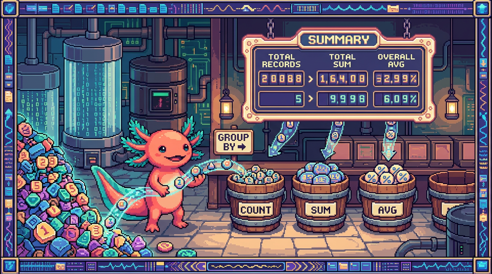

Capitulo 09 — Agregaciones, GROUP BY y funciones

Hasta ahora has sacado filas de una tabla: "dame todos los habitos", "dame los proyectos de este usuario". Pero muchas preguntas reales no van de filas sueltas, sino de grupos de filas. ¿Cuantos habitos tengo? ¿Cuantos dias seguidos llevo? ¿Que porcentaje de mis proyectos esta terminado? Para responder eso necesitas agregaciones: operaciones que toman un monton de filas y devuelven un solo numero (o un numero por grupo). En este capitulo Bit, nuestro ajolote, te acompana a contar, sumar, promediar y agrupar datos reales de RachaSimple y Faro.
1. ¿Por que necesitamos agregar?
Piensa en RachaSimple. Tienes una tabla registros donde, cada vez que completas un habito, se guarda una fila con la fecha, el habito y el usuario. Si llevas 200 dias registrados, esa tabla tiene 200 filas. Pero a ti no te interesa ver 200 filas: quieres un numero ("llevas 200 dias") o un numero por habito ("meditacion: 80 dias, ejercicio: 120 dias").
Ese salto de "muchas filas" a "un resumen" es justo lo que hacen las funciones de agregacion. Y cuando quieres ese resumen partido por categorias (por habito, por semana, por proyecto), entra en juego GROUP BY.
🟦 ¿Que significa? — Agregacion
Una agregacion es un calculo que toma un conjunto de filas y produce un solo valor resumen: un conteo, una suma, un promedio, un maximo. En lugar de devolver datos crudos, devuelve una conclusion sobre esos datos. Para que sirve: responder preguntas del tipo "cuantos", "cuanto", "en promedio", "el mayor". Donde se usa en un repo real: en RachaSimple, para mostrar "Has completado 47 dias este mes" en el panel del usuario; en Faro, para calcular el progreso de un proyecto a partir de sus fases.
PolyPaw juega en otra liga: guarda sus datos en archivos JSON sueltos, sin base de datos relacional. Ahi, si quisieras contar cuantas misiones completo un jugador, te tocaria abrir el archivo en Python, recorrer una lista y llevar un contador a mano. SQL te da esa misma cuenta en una sola linea. Esa es, en el fondo, la diferencia que hace valioso tener una base de datos como la de RachaSimple o Faro.
2. Las cinco funciones de agregacion basicas
SQL trae cinco funciones que vas a usar todo el tiempo: COUNT, SUM, AVG, MIN y MAX. Vamos a verlas con la tabla registros de RachaSimple, que guarda una fila por dia completado.
🟦 ¿Que significa? — COUNT
COUNTcuenta filas.COUNT(*)cuenta todas las filas del grupo;COUNT(columna)cuenta solo las filas donde esa columna no es NULL. Para que sirve: saber "cuantos". Donde se usa en un repo real: en RachaSimple para contar dias completados; en Faro para contar cuantas fases tiene un proyecto.
-- ¿Cuantos dias en total he registrado?
select count(*) as total_dias
from registros
where user_id = auth.uid();
🟦 ¿Que significa? — auth.uid()
auth.uid()es una funcion que Supabase expone dentro de Postgres y que devuelve el identificador (UUID) del usuario que esta haciendo la consulta en ese momento. La veras en casi todos los ejemplos comowhere user_id = auth.uid(), que viene a decir "solo mis filas". Para que sirve: filtrar datos por el usuario logueado sin tener que pasarle el id a mano; es la pieza con la que se construyen las politicas de RLS. Donde se usa en un repo real: en RachaSimple y Faro aparece en consultas y en las politicas de seguridad de cada tabla (registros, habitos, proyectos, fases) para que cada quien vea unicamente lo suyo.🟦 ¿Que significa? — SUM
SUM(columna)suma todos los valores numericos de una columna dentro del grupo. Para que sirve: totalizar cantidades (minutos, puntos, dinero). Donde se usa en un repo real: si en RachaSimple cada registro guardaraminutos_dedicados,SUM(minutos_dedicados)daria el total de minutos invertidos en el habito.
-- Total de minutos dedicados a habitos este usuario
select sum(minutos_dedicados) as minutos_totales
from registros
where user_id = auth.uid();
🟦 ¿Que significa? — AVG
AVG(columna)calcula el promedio (la media aritmetica) de los valores de una columna. Para que sirve: saber "cuanto en promedio". Donde se usa en un repo real: el promedio de minutos por sesion en RachaSimple, o el progreso promedio de los proyectos en Faro.🟦 ¿Que significa? — MIN y MAX
MIN(columna)devuelve el valor mas pequeno del grupo;MAX(columna), el mas grande. Funcionan con numeros, con fechas y tambien con texto (orden alfabetico). Para que sirve: encontrar el primero, el ultimo, el mayor, el menor. Donde se usa en un repo real: en RachaSimple,MIN(fecha)es el primer dia que registraste yMAX(fecha)el ultimo; en Faro,MAX(updated_at)dice cuando se toco un proyecto por ultima vez.
-- Primer y ultimo dia registrado, y promedio de minutos por sesion
select
min(fecha) as primer_dia,
max(fecha) as ultimo_dia,
count(*) as total_sesiones,
avg(minutos_dedicados) as promedio_minutos
from registros
where user_id = auth.uid();
Fijate en que puedes pedir varias agregaciones de golpe en el mismo SELECT. El resultado siempre es una sola fila con varias columnas, porque estas resumiendo toda la tabla en un unico resumen.
💡 Tip
Cuando quieras contar solo cosas distintas, usa
COUNT(DISTINCT columna). Por ejemplo,COUNT(DISTINCT habito_id)te dice cuantos habitos diferentes tienes registrados, sin importar cuantas veces aparezca cada uno.⚠️ Cuidado
COUNT(*)cuenta filas, aunque tengan columnas en NULL.COUNT(columna), en cambio, ignora los NULL de esa columna. Si una fila tieneminutos_dedicadosvacio,AVG(minutos_dedicados)no la tiene en cuenta ySUMla trata como si no existiera. Ojo: no es lo mismo "promedio de las sesiones con minutos" que "promedio de todas las sesiones".🟦 ¿Que significa? — NULL
NULLes la ausencia de valor: significa "aqui no hay dato", que no es lo mismo que cero ni que texto vacio. Las funciones de agregacion, salvoCOUNT(*), ignoran los NULL. Para que sirve: representar datos faltantes u opcionales. Donde se usa en un repo real: en Faro, un proyecto recien creado puede tenerdescripcionen NULL hasta que la IA la genera; en RachaSimple, un registro sin nota deja la columnanotaen NULL.
3. GROUP BY: un resumen por categoria
Hasta aqui hemos resumido toda la tabla en una sola fila. Pero lo normal es que quieras el resumen separado por algo: por habito, por semana, por proyecto. Para eso esta GROUP BY.
🟦 ¿Que significa? — GROUP BY
GROUP BY columnaagrupa las filas que comparten el mismo valor en esa columna y aplica las funciones de agregacion a cada grupo por separado. En vez de una sola fila de resumen, obtienes una fila por grupo. Para que sirve: comparar categorias entre si (cuantos por habito, cuanto por proyecto). Donde se usa en un repo real: en RachaSimple, contar dias completados por habito; en Faro, contar fases por proyecto.
-- Cuantos dias he completado de cada habito
select
habito_id,
count(*) as dias_completados
from registros
where user_id = auth.uid()
group by habito_id
order by dias_completados desc;
La imagen mental ayuda: SQL toma todas tus filas, las reparte en montones segun habito_id y cuenta cada monton. El resultado es una fila por habito con su conteo.
⚠️ Cuidado
Regla de oro del
GROUP BY: en elSELECT, cada columna debe estar agregada (con COUNT, SUM, etc.) o aparecer en el GROUP BY. Si pones una columna suelta que no esta agrupada ni agregada, Postgres te lanzara un error tipo "column must appear in the GROUP BY clause". El motivo es sencillo: SQL no sabria cual de los muchos valores del grupo mostrarte.🔎 En tu codigo
En RachaSimple el cliente normalmente trabaja con Supabase y TanStack Query. Para una agregacion mas elaborada que un
.select()simple, lo limpio es crear una vista o una funcion en Postgres y llamarla desde el cliente:ts // RachaSimple: leer el resumen por habito desde una vista const { data, error } = await supabase .from("resumen_por_habito") // una view que ya hace el GROUP BY .select("habito_id, dias_completados") .order("dias_completados", { ascending: false });Asi la logica de agregacion vive en la base de datos (rapida y con RLS aplicada) y el front se limita a consumirla.🟦 ¿Que significa? — RLS (Row Level Security)
Es una funcion de Postgres (y de Supabase) que filtra automaticamente las filas segun quien hace la consulta, mediante politicas. Aunque escribas
select * from registros, RLS solo te devuelve tus filas. Para que sirve: que cada usuario vea solo sus datos sin tener que acordarse delwhere user_id = ...en cada consulta. Donde se usa en un repo real: RachaSimple y Faro tienen RLS en todas sus tablas (registros, habitos, perfiles, proyectos, fases, conexiones de usuario). Por eso muchos ejemplos funcionarian incluso sin elwhere user_id, ya que RLS filtra de todos modos.
4. HAVING: filtrar grupos
Ya sabes que WHERE filtra filas antes de agrupar. Pero, ¿como filtras los grupos? Por ejemplo: "muestrame solo los habitos que he completado mas de 30 dias". Esa es una condicion sobre el resultado de un COUNT, y WHERE todavia no puede verlo en ese momento. Aqui entra HAVING.
🟦 ¿Que significa? — HAVING
HAVINGes comoWHERE, pero se aplica despues de agrupar, sobre los valores ya agregados. Filtra grupos enteros segun su resumen. Para que sirve: quedarte solo con los grupos que cumplen una condicion calculada (conteo, suma, promedio). Donde se usa en un repo real: en RachaSimple, mostrar solo los habitos "consolidados" (mas de 30 dias); en Faro, listar proyectos con mas de 5 fases.
-- Habitos en los que llevo mas de 30 dias completados
select
habito_id,
count(*) as dias_completados
from registros
where user_id = auth.uid() -- filtra filas: solo mis registros
group by habito_id
having count(*) > 30 -- filtra grupos: solo los de mas de 30
order by dias_completados desc;
💡 Tip
Orden mental de una consulta con grupos: primero WHERE descarta filas, luego GROUP BY arma los montones, despues se calculan las agregaciones, HAVING descarta montones y, al final, ORDER BY ordena el resultado. Si tienes presente ese orden, nunca vas a confundir WHERE con HAVING.
⚠️ Cuidado
No metas condiciones de fila en
HAVINGni condiciones de grupo enWHERE.where minutos > 10(fila) yhaving count(*) > 30(grupo) viven en sitios distintos. Mezclarlos te dara errores o resultados raros.
5. Funciones de fecha utiles: contar por semana
Un caso clasico de RachaSimple: "cuantos habitos complete cada semana". El problema es que cada registro guarda una fecha exacta (2026-06-26), no una "semana". Hace falta agrupar fechas distintas que caen dentro de la misma semana, y para eso estan las funciones de fecha.
🟦 ¿Que significa? — DATE_TRUNC
date_trunc('unidad', fecha)"recorta" una fecha a la unidad que pidas:'week','month','day','year'. Todas las fechas de la misma semana se convierten en el mismo valor (el lunes de esa semana). Para que sirve: agrupar fechas distintas en periodos (semana, mes) para poder contarlas juntas. Donde se usa en un repo real: en RachaSimple, para la grafica de "habitos por semana"; en Faro, para ver actividad por mes.
-- Habitos completados por semana
select
date_trunc('week', fecha)::date as semana,
count(*) as completados
from registros
where user_id = auth.uid()
group by date_trunc('week', fecha)
order by semana;
Aqui date_trunc('week', fecha) convierte el lunes 22, el miercoles 24 y el viernes 26 todos en el "lunes 22", asi que las tres filas caen en el mismo grupo y count(*) da 3 para esa semana. El ::date es una conversion de tipo que sirve para mostrar solo la fecha, sin la hora.
🟦 ¿Que significa? — Conversion de tipo (cast)
El
::tipo(por ejemplo::dateo::int) convierte un valor de un tipo a otro.valor::datequita la parte de hora de una fecha-hora. Para que sirve: mostrar o comparar datos en el formato correcto. Donde se usa en un repo real: en RachaSimple, mostrar la semana como fecha limpia; en Faro, convertir texto a numero al calcular progreso.
Hay otras funciones de fecha que te vas a cruzar a menudo:
🟦 ¿Que significa? — EXTRACT y AGE
extract(dow from fecha)saca un trozo de la fecha (dow= dia de la semana, 0=domingo; tambienmonth,year,hour).age(fecha1, fecha2)da la diferencia entre dos fechas como un intervalo legible (por ejemplo "3 days"). Para que sirve: analizar patrones (¿en que dia de la semana fallo mas?) o medir antiguedad. Donde se usa en un repo real: en RachaSimple, ver en que dia de la semana se rompe mas la racha; en Faro,age(now(), created_at)para decir "este proyecto tiene 2 meses".
-- ¿En que dia de la semana completo mas habitos?
select
extract(dow from fecha) as dia_semana, -- 0=domingo ... 6=sabado
count(*) as completados
from registros
where user_id = auth.uid()
group by extract(dow from fecha)
order by completados desc;
💡 Tip
En Postgres
now()te da la fecha-hora actual ycurrent_datesolo la fecha de hoy. Para "lo de los ultimos 7 dias" usawhere fecha >= current_date - interval '7 days'. Eseintervales la forma de restar tiempo.
6. Funciones de texto utiles
A veces toca limpiar o transformar texto antes de agrupar o mostrar. Estas son las que mas se repiten en RachaSimple y Faro.
🟦 ¿Que significa? — Funciones de texto (LOWER, UPPER, LENGTH, TRIM, CONCAT, ||)
lower(t)yupper(t)pasan a minusculas/mayusculas;length(t)da el numero de caracteres;trim(t)quita los espacios sobrantes de los lados;concat(a, b)y el operador||unen textos. Para que sirve: normalizar texto (para que "Ejercicio" y "ejercicio" cuenten igual) y armar etiquetas legibles. Donde se usa en un repo real: en Faro, para mostrar el nombre del proyecto con la inicial en mayuscula o juntar "nombre + estado"; en RachaSimple, para que los nombres de habito se comparen sin importar las mayusculas.
-- Normalizar el nombre del habito y contar sin que mayusculas separen grupos
select
lower(trim(nombre)) as habito_normalizado,
count(*) as veces
from habitos
where user_id = auth.uid()
group by lower(trim(nombre))
order by veces desc;
-- Faro: armar una etiqueta legible juntando nombre y estado
select
nombre || ' (' || estado || ')' as etiqueta
from proyectos
where user_id = auth.uid();
⚠️ Cuidado
Si concatenas con
||y una de las partes es NULL, todo el resultado se vuelve NULL. Siestadopuede venir vacio, protegelo conCOALESCE(lo vemos en la seccion 8) para no acabar con etiquetas en NULL.
7. CASE: clasificar dentro de la consulta
CASE es el "si... entonces... si no..." de SQL. Te deja crear categorias o etiquetas calculadas sobre la marcha, y rinde muchisimo combinado con agregaciones.
🟦 ¿Que significa? — CASE
CASE WHEN condicion THEN valor ... ELSE otro ENDevalua las condiciones en orden y devuelve el primervalorcuya condicion sea verdadera; si ninguna lo es, devuelve elELSE. Para que sirve: clasificar, etiquetar o transformar valores fila por fila sin salir de SQL. Donde se usa en un repo real: en Faro, traducir el progreso numerico a un estado ("En curso", "Casi listo"); en RachaSimple, marcar si un dia fue laborable o fin de semana.
-- RachaSimple: clasificar cada registro y contar por categoria
select
case
when extract(dow from fecha) in (0, 6) then 'fin de semana'
else 'entre semana'
end as tipo_dia,
count(*) as completados
from registros
where user_id = auth.uid()
group by 1 -- agrupa por la primera columna del SELECT (el CASE)
order by completados desc;
Hay un truco que vale oro: meter un CASE dentro de un SUM para contar condicionalmente.
-- Faro: por proyecto, cuantas fases hechas vs total
select
proyecto_id,
count(*) as fases_totales,
sum(case when completada then 1 else 0 end) as fases_hechas
from fases
where user_id = auth.uid()
group by proyecto_id;
Lo que hace sum(case when completada then 1 else 0 end) es poner un 1 por cada fase completada y un 0 por cada una que no, y sumarlo todo: el resultado es cuantas fases estan hechas. Es la forma clasica de "contar solo las que cumplen una condicion" dentro de un grupo.
💡 Tip
group by 1significa "agrupa por la primera columna del SELECT". Es comodo cuando esa columna es una expresion larga (como un CASE) y no te apetece repetirla. Funciona igual conorder by 1,order by 2, etc.
8. COALESCE: un valor de respaldo para los NULL
Los NULL son utiles, pero a ratos estorban: no quieres mostrar "null" en pantalla ni que un NULL te rompa un calculo. Para eso esta COALESCE.
🟦 ¿Que significa? — COALESCE
coalesce(a, b, c)devuelve el primer argumento que no sea NULL. Siatiene valor, devuelvea; siaes NULL, prueba conb; y asi sucesivamente. Para que sirve: poner un valor por defecto cuando un dato falta, para no mostrar ni sumar NULL. Donde se usa en un repo real: en Faro, mostrar "Sin descripcion" cuando la IA aun no genero el texto; en RachaSimple, tratar los minutos vacios como 0.
-- Faro: nunca mostrar NULL en la descripcion
select
nombre,
coalesce(descripcion, 'Sin descripcion aun') as descripcion
from proyectos
where user_id = auth.uid();
-- RachaSimple: tratar minutos faltantes como 0 antes de sumar
select
habito_id,
sum(coalesce(minutos_dedicados, 0)) as minutos_totales
from registros
where user_id = auth.uid()
group by habito_id;
⚠️ Cuidado
No abuses de
COALESCE(columna, 0)dentro deAVG. Convertir los NULL en 0 baja el promedio, porque ahora cuentan como sesiones de 0 minutos. Si lo que buscas es el promedio de las sesiones que si tienen minutos, deja queAVGignore los NULL por su cuenta.
9. Caso real: progreso por proyecto en Faro
Faro calcula el progreso de cada proyecto como porcentaje de fases completadas. Vamos a juntar casi todo lo del capitulo en una sola consulta.
-- Faro: progreso (%) de cada proyecto segun sus fases
select
p.id,
p.nombre,
count(f.id) as fases_totales,
sum(case when f.completada then 1 else 0 end) as fases_hechas,
round(
100.0 * sum(case when f.completada then 1 else 0 end)
/ nullif(count(f.id), 0)
) as progreso_pct
from proyectos p
left join fases f on f.proyecto_id = p.id
where p.user_id = auth.uid()
group by p.id, p.nombre
order by progreso_pct desc nulls last;
Vamos por partes, que aqui hay varias ideas nuevas trabajando a la vez:
left join fasestrae todas las fases de cada proyecto. UsamosLEFT JOIN(no unJOINnormal) para que un proyecto sin fases siga apareciendo, concount(f.id) = 0.sum(case when f.completada then 1 else 0 end)cuenta las fases hechas (el truco de la seccion 7).100.0 * hechas / totalesda el porcentaje. Escribimos100.0(con decimal) a proposito, para forzar la division con decimales; si pusieramos100entero, Postgres haria division entera y un proyecto a medias daria 0%.round(...)redondea a un entero bonito para la interfaz.
🟦 ¿Que significa? — NULLIF
nullif(a, b)devuelve NULL siaes igual ab, yaen cualquier otro caso. Para que sirve: sobre todo, evitar la division por cero.count / nullif(total, 0)convierte un divisor de 0 en NULL, y dividir entre NULL da NULL en vez de soltar un error. Donde se usa en un repo real: en Faro, para que un proyecto sin fases no rompa el calculo de progreso (da NULL, no un crash).🟦 ¿Que significa? — LEFT JOIN
LEFT JOINcombina dos tablas conservando todas las filas de la tabla izquierda, aunque no tengan pareja en la derecha (esas parejas que faltan salen como NULL). UnJOINnormal descartaria las que no emparejan. Para que sirve: no perder los registros "sin hijos" (proyectos sin fases, habitos sin registros). Donde se usa en un repo real: en Faro, listar todos los proyectos aunque alguno no tenga fases todavia.🔎 En tu codigo
En Faro, este calculo suele vivir en una vista o funcion de Postgres y se consume desde Next.js:
ts // Faro: leer el progreso ya calculado por la base de datos const { data } = await supabase .from("vista_progreso_proyectos") .select("id, nombre, progreso_pct") .order("progreso_pct", { ascending: false, nullsFirst: false });Ten en cuenta que el progreso de Faro es hibrido: a veces lo ajusta la IA (OpenAI). Esta consulta da la parte "objetiva" (milestones/fases), que luego se combina con la sugerencia de la IA.
10. Caso real: la racha mas larga en RachaSimple
La pregunta estrella de una app de habitos: "¿cual es mi racha mas larga de dias seguidos?". Cuesta mas de lo que parece, porque hay que detectar tramos de fechas consecutivas. Existe un truco clasico de SQL para esto y, aunque tira de cosas que veras a fondo mas adelante (las funciones de ventana), vale la pena verlo ya como anticipo.
-- RachaSimple: racha mas larga de dias consecutivos
with dias as (
select distinct fecha
from registros
where user_id = auth.uid()
),
grupos as (
select
fecha,
-- a cada fecha le restamos su numero de orden; los dias seguidos
-- comparten el mismo "ancla", asi que forman un grupo
fecha - (row_number() over (order by fecha))::int as ancla
from dias
)
select
count(*) as racha_dias,
min(fecha) as inicio,
max(fecha) as fin
from grupos
group by ancla
order by racha_dias desc
limit 1;
La intuicion es esta: si tomas dias consecutivos (22, 23, 24) y a cada uno le restas su posicion en la lista (1, 2, 3), todos dan el mismo numero "ancla". En cuanto hay un hueco, el ancla cambia. Asi que agrupar por ancla te separa los tramos de dias seguidos, y count(*) mide cada tramo. El order by ... limit 1 se queda con el tramo mas largo: tu racha record.
🟦 ¿Que significa? — CTE (clausula WITH)
Un CTE (Common Table Expression) es una consulta con nombre, definida con
WITH, que puedes usar como si fuera una tabla temporal dentro de la consulta principal. Sirve para partir un problema grande en pasos legibles. Para que sirve: ordenar la logica en etapas (primerodias, luegogrupos, luego el resumen) en lugar de una consulta gigante e ilegible. Donde se usa en un repo real: en RachaSimple, para el calculo de rachas; en Faro, para reportes de progreso que combinan varias tablas.🟦 ¿Que significa? — Funcion de ventana (ROW_NUMBER, OVER)
Una funcion de ventana calcula un valor mirando un conjunto de filas relacionadas sin colapsarlas en una sola (al reves que las agregaciones).
row_number() over (order by fecha)numera las filas 1, 2, 3... segun la fecha. Para que sirve: numerar, rankear o comparar filas vecinas. Es un tema grande que tiene su propio capitulo mas adelante. Donde se usa en un repo real: el truco de la racha en RachaSimple depende derow_number().💡 Tip
No te agobies si la consulta de la racha te parece magia negra. Es un patron avanzado; lo que importa aqui es que entiendas que hace cada agregacion (
count,min,max) y que reconozcas unWITH. Las funciones de ventana las dominaras en su propio capitulo.🔎 En tu codigo
En RachaSimple lo practico es encapsular esto en una funcion de Postgres (
get_longest_streak) y llamarla con RPC desde el cliente:ts // RachaSimple: pedir la racha mas larga calculada en la base de datos const { data, error } = await supabase.rpc("get_longest_streak"); // data -> { racha_dias, inicio, fin }Asi el calculo pesado ocurre en Postgres (con RLS aplicada) y TanStack Query cachea el resultado en el front.
11. Por que esto no existe igual en PolyPaw
Conviene cerrar con un contraste. PolyPaw guarda sus datos en archivos JSON: una lista de misiones, un objeto por jugador. No hay tablas ni SQL. Para "contar misiones completadas por semana" tendrias que abrir el JSON en Python, recorrer la lista con un bucle, parsear cada fecha, agrupar a mano en un diccionario y sumar. Funciona con pocos datos, pero todo el peso recae en tu codigo.
En RachaSimple y Faro, con Postgres detras, esa misma pregunta es un GROUP BY de tres lineas que ademas respeta RLS (cada quien ve solo lo suyo) y se ejecuta cerca de los datos. Esa es la ventaja de tener una base de datos relacional: las preguntas de resumen se vuelven triviales y seguras. Bit lo resume asi: en JSON cuentas tu; en SQL, cuenta la base de datos por ti.
✅ Checklist — ¿ya domino esto?
- [ ] Se que una agregacion convierte muchas filas en un valor resumen.
- [ ] Uso
COUNT,SUM,AVG,MINyMAX, y se queCOUNT(*)cuenta filas yCOUNT(col)ignora NULL. - [ ] Entiendo que
GROUP BYhace un resumen por cada categoria, una fila por grupo. - [ ] Recuerdo la regla: en el SELECT, toda columna va agregada o en el GROUP BY.
- [ ] Distingo
WHERE(filtra filas, antes de agrupar) deHAVING(filtra grupos, despues de agrupar). - [ ] Uso
date_truncpara agrupar fechas por semana o mes, yextractpara sacar dia/mes/ano. - [ ] Aplico funciones de texto (
lower,trim,||) para normalizar y armar etiquetas. - [ ] Uso
CASEpara clasificar, incluido el trucosum(case when ... then 1 else 0 end). - [ ] Uso
COALESCEpara dar valores de respaldo a los NULL yNULLIFpara evitar dividir entre cero. - [ ] Entiendo a grandes rasgos como se calcula el progreso por proyecto (Faro) y la racha mas larga (RachaSimple).
🧪 Ejercicios
-
💻 En el editor SQL de Supabase de RachaSimple, escribe una consulta que devuelva, en una sola fila, el total de dias registrados (
count), tu primer dia (min(fecha)) y tu ultimo dia (max(fecha)). -
💻 Escribe una consulta con
GROUP BY habito_idque cuente los dias completados de cada habito y los ordene de mayor a menor. Luego agregale unHAVINGpara mostrar solo los habitos con mas de 10 dias. -
💻 Usa
date_trunc('week', fecha)para contar cuantos habitos completaste por semana en el ultimo mes. Anadewhere fecha >= current_date - interval '30 days'. -
💻 En Faro, escribe la consulta de progreso por proyecto de la seccion 9, pero protege el caso de proyectos sin fases con
nullif. Comprueba que un proyecto sin fases sale con progreso NULL y no rompe la consulta. -
Sin computadora: explica con tus palabras la diferencia entre
WHEREyHAVING, y pon un ejemplo de cada uno usando la tablaregistros. Pista: una condicion sobrefechavs. una condicion sobrecount(*). -
💻 Reto: usando
CASE, clasifica tus registros en "entre semana" y "fin de semana" (conextract(dow ...)) y cuenta cuantos hay de cada tipo. ¿En cual eres mas constante? Comparte el resultado con Bit.